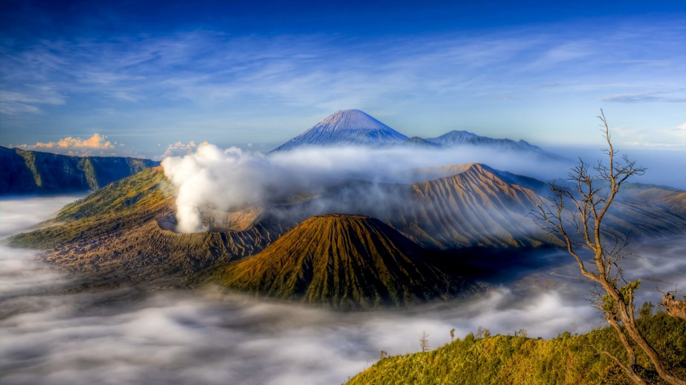

1.Bromo
Gunung Bromo adalah ikon dari Jawa Timur yang sudah terkenal hingga ke mancanegara. Setiap tahun, ribuan turis asing dari kawasan Eropa berdatangan ke tempat wisata di Jawa Timur ini, terutama saat musim panas. Mereka ingin melihat sendiri seperti apa kemagisan dari Gunung Bromo yang memiliki ketinggian 2.329 mdpl ini. Gunung yang terletak di Probolinggo ini menawarkan 3 pesona yang tidak bisa ditolak dengan mudah.

2. Kawah ijen
Kawah Ijen telah berhasil menjadi ikon kedua dari Jawa Timur yang ketenarannya tidak kalah dengan Bali. Terletak di kawasan Banyuwangi, kawah dari gunung yang terus mengeluarkan belerang ini menjadi tujuan wisatawan yang ingin merasakan pendakian kecil sembari menyaksikan bentang alam yang menakjubkan. Atraksi yang ditawarkan oleh tempat wisata di Jawa Timur ini adalah kegiatan penambang belerang yang unik. Ada puluhan orang menambang dari pagi untuk membawa bongkahan batu belerang dari gunung hingga ke bawah. Selain itu, Kawah Ijen juga memiliki blue fire yang merupakan salah satu fenomena alam terbaik di dunia.
3. Pantai klayar
Kalau di kawasan Bali ada Devil’s Tear, maka di Pacitan ada Pantai Klayar yang menawarkan deburan air ke udara. Saat ombak mengenai batu karang, buliran air akan terciprat ke udara sehingga siapa saja yang berada di dekat lokasi bisa basah kuyup tanpa harus mencebur ke laut. Wisatawan yang datang ke Pantai Klayar bisa menikmati pemandangan perbukitan karang yang terukir alami oleh air plus ombak yang besar dan selalu menciptakan atraksi. Selain itu, keadaan alam sekitar juga masih alami karena telah dikelola dengan baik oleh pemerintah setempat.

4. Taman nasional baluran
Taman Nasional Baluran terletak di dua wilayah kota yaitu Situbondo dan Banyuwangi. Dengan luas mencapai 25.000 hektare, kawasan ini terbagi menjadi beberapa wilayah yang berbeda. Pertama ada kawasan pegunungan dengan Gunung Bauran sebagai puncak tertingginya. Selanjutnya ada kawasan hutan musim, hutan mangrove di dekat pantai, dan sabana.

5. Pantai sukamade
Yang paling menarik saat mendatangi Pantai Sukamade adalah perjalanannya yang cukup menantang. Sebelum menuju kawasan mes, wisatawan harus melalui jalanan penuh batu terjal di tengah hutan selama 3-4 jam. Setelah sampai di mes, wisatawan akan beristirahat sejenak sebelum penjelajahan dilakukan pada malam hari. Berbeda dengan pantai lain yang seru dinikmati saat pagi atau siang, pantai ini justru lebih seru dikunjungi saat malam. Wisatawan yang datang ke tempat wisata di Jawa Timur ini akan dibawa untuk mencari penyu yang akan bertelur di pasir.
6. Air tejun coban rondo
Air Terjun Coban Rondo adalah destinasi unggulan di Batu selain aneka taman bermain. Terletak di lereng pegunungan, air terjun ini menawarkan 3 pesona kepada pengunjung. Pertama tentu saja gerojokan air dari atas bukit yang memberikan efek embun nan segar meski siang hari terasa begitu panas. Kedua adalah bentang alam yang memikat. Karena terletak di kaki gunung, kawasan ini dipenuhi hutan yang lebat.
7. Rujak Cingur
Rujak cingur adalah makanan yang banyak dijumpai si Surabaya, makanan ini terdiri dari aneka sayuran dan daging beserta cingur yang di balut menjadi satu di tambah dengan bumbu khas rujak Surabaya menjadi satu kenikmatan yang di paduan bersama kerupuk